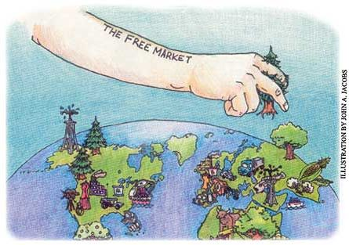

"Economics is used as a justification for inequality, for racism," says Fadhel Kaboub, a graduate student at UMKC.
Environmentalists, small-scale agriculturalists and alternative energy enthusiasts have been told on more than one occasion that their ideas weren't "good economics." But a student-led initiative is seeking to change exactly what "good economics" means.
At an international economics conference held last August at the University of Missouri - Kansas City (UMKC), 25 participants signed "The Kansas City Proposal," an open letter to economic departments worldwide urging them to change their ways.
"Orthodox economics doesn't really encompass reality," says Franziska Pitcher, a graduate student who was one of the original signees. The orthodox school of thought is that markets basically will end up doing whatever's best without any control or guidance. Most people have encountered this theory in textbook illustrations of "invisible hands" that move workers from factories where they are not needed to factories where they are.
But with global warming, looming energy crises and multinational corporations that are more powerful than the countries in which they operate, students are asking whether orthodox economics' devotion to math and numbers can really be the end-all and be-all of economic theory.
The alternative, according to Pitcher, is a heterodox approach that takes in many approaches to looking at economic situations, including borrowing from the other social sciences - such as anthropology and psychology - which orthodox economics has long snubbed. A heterodox economist believes that regulating the market is a good thing, since the market doesn't always do what's best for society at large.
The proposal seeks only to change the way economics departments teach, but when you consider that the people who make decisions about trade regulations, labor rights and industrial responsibility for pollution often cite their economics professors when explaining far-reaching regulato ry issues, changing the curriculum could have a wide impact.
"Economics is used as a justification for inequality, for racism," says Fadhel Kaboub, also a graduate student at UMKC. He feels that orthodox economics is used to convince people that unemployment, poverty and inequality around the globe are inevitable results of the market.
Kaboub says the unyielding laws of math that dominate economics, but don't reflect reality, are one of the main reasons the numbers of students studying economics is down. Only a few schools, UMKC for one, take a heterodox approach to teaching economics.
Why should people who don't spend their time discussing a post-Keynesian reality care? Heterodox economists are more likely to suggest that industries be taxed on the amount of pollution they produce to help slow a growing environmental crisis (see " The Economy and the Earth "), that consumers should be steered toward local food providers rather than wast ing resources on transportation (see " Think Globally Eat Locally "), or that incentives be given to homeowners trying to use renewable energy for at least part of their needs.
The petition is mostly for academics, but the proposal's supporters are looking for any help they can get. After all, Kaboub says, there's a reason why this is a student-led initiative: "(Orthodox economics) is an indoctrination process," he says. "You can never change the mind of a professor today - you can change the mind of a student."
And since those students will be the economic policy makers of the future, a lesson in truly "good" economics couldn't hurt.
Green Gazette is written by Sarah Beth Cavanah except where noted.
|
 |
|
|